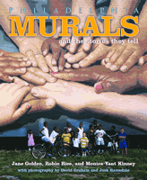

The most important public art program in the United States
The most important public art program in the United States


 The most important public art program in the United States
The most important public art program in the United States

|  |
Philadelphia Murals and the Stories They TellJane Golden, Robin Rice and Monica Yant Kinney, photographs by David Graham and Jack Ramsdalecloth EAN: 978-1-56639-951-7 (ISBN: 1-56639-951-3) |
Athen�um of Philadelphia�s Literary Award, 2004
In June 1984, Jane Golden, a young muralist from Margate, New Jersey, headed up a project that was originally planned as a six-week youth program in the fledgling Philadelphia Anti-Graffiti Network. This small exercise in fighting graffiti grew into the most vibrant public art project in the United States. Led by Golden and dozens of artists, neighborhood residents, and volunteers, the Philadelphia Mural Arts Program has adorned the city with over two thousand murals. In the process, this vibrant art, painted mostly on city walls, helped to change the look of the city, creating an enduring legacy in all of the neighborhoods in which the murals were added.
In this lavishly illustrated chronicle of the Mural Arts Program, you will see the murals in all of their beauty and learn about their inspiring legacies in neighborhoods throughout the city. Go behind the scenes to find out how murals are made and why the process is as much an art of diplomacy and consensus building as paint and perspective. Discover through pictures and text how murals give communities a new way to define themselves, not in terms of the streets and intersections that border them, but in terms of the people who came together to create something of dramatic beauty.
Excerpt available at www.temple.edu/tempress
Foreword
Preface: What Is a Mural's Value?
Acknowledgments
How Are Murals Made?
1. "Cool Jane"
Artist's Profile: Tish Ingersoll
Artist's Profile: Ras Malik
2. The Peace Wall
Artist's Profile: Paul Santoleri
3. Norris Square: Where Art and Nature Flourish
Artist's Profile: Ana Uribe
4. The Mural Arts Program Comes of Age
Artist's Profile: David Guinn
Artist's Profile: Parris Craig Stancell
5. A Shift in Consciousness, South Philly Style
Artist's Profile: Sarah McEneaney
6. Meg Saligman Thinks Big
Artist's Profile: David McShane
7. A Wall of Neighborhood Heroes
Artist's Profile: Quimin Liu
Artist's Profile: Cliff Eubanks Jr.
Mural Map
Index
Photography Credits
 | Jane Goldenis Executive Director of the Philadelphia Mural Arts Program, the largest program of its kind in the United States. She graduated from Stanford University and holds an MFA from the Mason Gross School of the Arts at Rutgers, State University of New Jersey. This is her first book. She lives in Philadelphia. |
 | Robin Rice is the senior art critic for the Philadelphia City Paper. She writes for a number of national and international magazines, including American Ceramics, Woman's Art Journal, and ARTnews. She is an adjunct Assistant Professor in the graduate programs in criticism and humanities at the University of the Arts in Philadelphia. The recipient of writing fellowships from the Mid Atlantic Arts Foundation and the Pennsylvania Council on the Arts. She lives in Philadelphia. |
 | Monica Yant Kinneyis a metropolitan columnist at The Philadelphia Inquirer, where she has worked since 1996. She was formerly the television critic at the St. Petersburg (Fla.) Times. She grew up in Fort Wayne, Indiana; graduated from the University of Notre Dame; and is married to David Kinney, a political reporter for the Newark Star-Ledger. This is her first book. |
 | David Graham is a freelance photographer whose work has appeared in Time, Newsweek, U.S. News and World Report, and The New York Times Magazine, among other publications. He has published four previous books, including Taking Liberties (2001). He is Associate Professor of photography at the University of the Arts in Philadelphia. |
 | Jack Ramsdale has been involved with the Mural Arts Program since 1998. In November 2001, his mural design titled "ONE WORLD" in remembrance of the victims of 9/11 was painted across 15th Street from City Hall. He attended Cranbrook Academy of Art, receiving an MFA with a photography concentration. He has had a commercial photography business for the last fifteen years and continues to create art in Philadelphia, where he now resides. |
General Interest
Philadelphia Region
Art and Photography
© 2015 Temple University. All Rights Reserved. This page: http://www.temple.edu/tempress/titles/1601_reg.html.